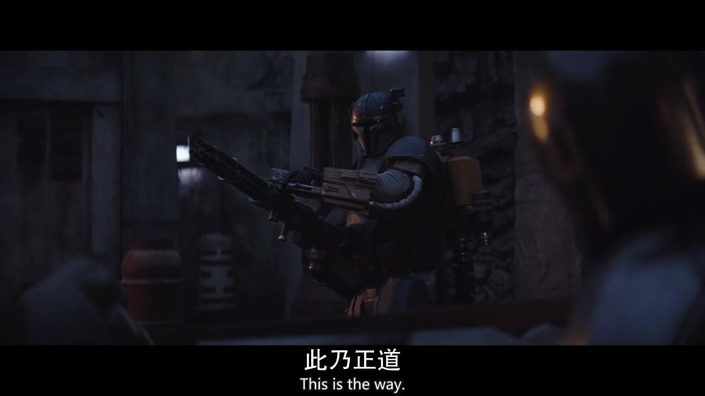

衍生剧《曼达洛人第一/二季》
该剧的时间线设置在帝国陨落后和第一秩序出现前。在远离新共和国掌控的银河系边远星带，讲述一位独行枪手的艰辛奋斗的故事。 恩多战役之后，帝国被推翻、新共和国成立，银河政治格局大变。曼达洛人遭遇了一场灭顶之灾，被残余帝国势力屠杀。幸存者隐居起来，积蓄力量寻求新的崛起。只有主角从事赏金猎人行当，为组织秘密筹措资金。 残余帝国势力希望得到这名婴儿，发出赏金招募。曼达洛人找到了婴儿，但最后却拒绝让其落入残余帝国势力之手，与婴儿踏上了流浪旅途。婴儿作为一系列事件的引子，他的身份也成为了一个迷。

衍生剧《欧比旺·克诺比》